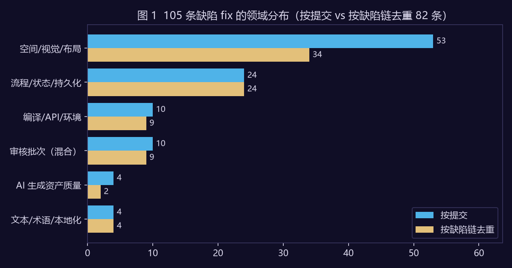
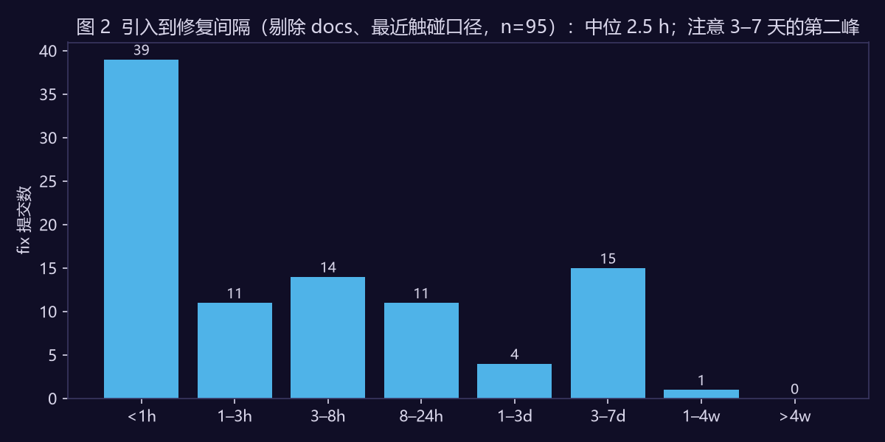
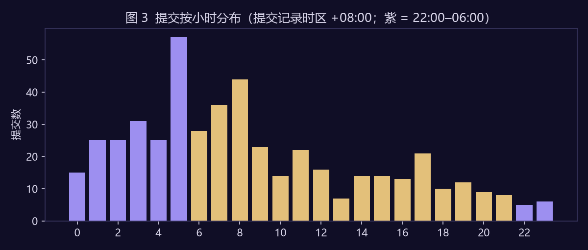
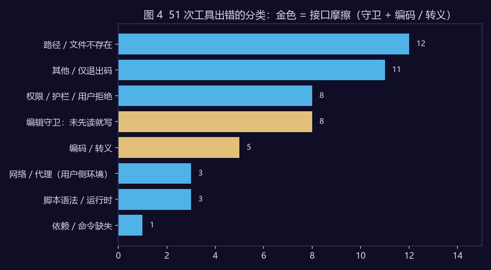

关于本拆解案的方法说明（请先读）
这份不是"AI Coding 工具评测"。市面上的评测大多是基准分数或使用感受，我手里有一份更少见的东西：一个人用 AI Coding 工作流做完一款可玩游戏的 git 历史，以及后续一个月的会话日志。它们是过程的副产品，不是为了写文章而记录的，没有被"表现好"的动机污染——但有另一种污染：提交信息由 agent 生成、作者审阅，fix / feat 的边界是 agent 定的，本文全程记着这一点。
本文回答三个产品问题：AI 生成的东西返工集中在哪一类、缺陷多久被修掉、人机接口在哪里打滑。每个结论由脚本从日志算出，并按可信度分层：
| 层 | 内容 | 可信度 |
|---|---|---|
| 数据层 | 提交时间 / 前缀 / 触及文件；会话内工具调用与出错记录 | 一手记录，完整 |
| 标注层 | fix 提交的"缺陷领域"与"暴露手段"由作者人工标注，以正则初标 + 逐条覆盖的形式固化在脚本里；工具错误按正则分八类 | 人工标注，可逐条核对，有主观性 |
| 推断层 | "编译抓不到的返工占七成"这类判断，以及由此推出的产品机会 | 单项目、单开发者、单工具（n=1），只主张方向 |
四条硬约束：会话日志只做聚合统计，不导出任何对话内容；不与任何其他产品做数值比较（本文只描述作者使用的这一个工具、这两个版本）；两个数据源时间窗口不同（游戏开发期 vs 之后的文档 / 作品集期），不拼成一条曲线；下文的"用户"一律指作为工具使用者的作者本人，不是玩家。
1. 选题说明
AI Coding 产品的公开讨论几乎都围绕"生成质量"：基准通过率、一次成功率、代码接受率。但一个真实项目的成本不在生成那一刻，而在生成之后——错的东西什么时候被发现、被谁发现、发现它要多贵。这三个量决定了 AI 加速到底能不能兑现。
我的项目是一个方便的观察对象：Unity 回合制 RPG，代码与内容由 agent 生成、本人审阅与实机验证；提交按 conventional commits 写，fix 提交的主题句写清了"错在哪"，让事后标注成为可能。而且它有一个特殊性：游戏是空间的、视觉的、有状态的，很多错误不会让编译器报错，正好放大了"验证缺口"这个问题。
2. 数据与口径
数据源 A（git）：仓库首提交是 ECS 重构前的基线快照，此前约一个月的原型期没有 git 记录；游戏本体主开发期到 2026-07-22，共 480 条非 merge 提交、30 个活跃天。前缀分布 feat 201 / fix 108 / docs 99 / chore 38 / 其他 34。fix 与 feat 之比 0.54。仓库另有 08-10 的 4 条提交属于 NPC Agent 接入，不计。
数据源 B（会话日志）：同一项目目录下、论文交付后的 15 个 Claude Code 会话（NPC Agent 接入、作品集与拆解案、文档、少量本机运维；已排除正在写本文的那个会话以避免自指）。用户文本消息 173 条（剔除系统占位与斜杠命令回显），工具调用 1,236 次，出错 51 次（4.1%）。
两个自定义指标：
- 引入到修复间隔：一条 fix 提交触及的文件，距离它们上一次被非 fix 提交改动的小时数。它不是"缺陷被发现的时间"——发现时刻在 git 里不可观测；多文件时取最近一次或最早一次触碰是两种口径，本文两种都算（§4）。
- 每条用户消息触发的工具调用数：近似"AI 在一句话之后能自己走多远"。没有参照值，只作本项目描述。
3. 返工集中在哪：按提交算一半是空间视觉，按缺陷去重后四成
108 条 fix 里 3 条不是缺陷（数值调整、美术升级、开发工具功能），剔除后 105 条，按缺陷领域人工标注。同一缺陷常被连续多条 fix 追打（接地修了 5 版、海面 7 条），所以再按"缺陷链"去重（同类别、与上一条 fix 共享文件、间隔 ≤ 3 天的连续 fix 合并）：
| 领域 | 按提交 | 占比 | 按缺陷链 | 占比 | 典型主题 |
|---|---|---|---|---|---|
| 空间 / 视觉 / 布局 | 53 | 50% | 34 | 41% | 浮空、穿模、出生点掉到安全层、立绘遮住文本、海面朝下被剔除 |
| 流程 / 状态 / 持久化 | 24 | 23% | 24 | 29% | 任务乱序软锁、一次性演出被重复触发、菜单 BGM 槽位从未被播放 |
| 编译 / API / 环境 | 10 | 10% | 9 | 11% | CS0104 歧义、URP 与内置管线材质、视频编码链路 |
| 审核批次（混合） | 10 | 10% | 9 | 11% | 多路审核后一条提交修多处 |
| AI 生成资产质量 | 4 | 4% | 2 | 2% | 多手、身体比例、题库答案位置偏置 |
| 文本 / 术语 / 本地化 | 4 | 4% | 4 | 5% | 术语收敛、说话人名本地化 |

再按暴露手段标注：编译器或测试程序集直接报出的只有 5 条（5%）；流程 / 状态类 24 条（23%）原则上可由单测或运行时断言覆盖（项目本身有 EditMode 测试）；其余 76 条（72%）依赖目视或实机走查。
结论一：在本项目里，能被编译器直接报出的返工约 5%，测试原则上可覆盖约四分之一，剩下七成只能靠看。 空间视觉类无论按提交（50%）还是按缺陷去重（41%）都是最大一类。
这对 AI Coding 产品的含义：当前工具的验证闭环是"编译 + 测试"，它覆盖的是较小的那部分。对游戏这类"结果是看出来的"领域，生成得越快，看不见的返工堆得越快——这是本项目的观察，不外推到其他领域。
一个佐证：提交信息明确写了"由作者本人实机验证 / 走查发现"的 fix 有 10 条（10%，只数写明来源的，是下限），其中 8 条是空间视觉类——人眼是这一类缺陷的主要探测器。
4. 缺陷多久被修掉：一条撤回的结论，和一个更有用的形状
v1.0 曾写"状态类缺陷暴露最慢，是视觉类的 3.6 倍"。审核指出这个数字完全由口径决定，重算后方向在两种口径之间反转：
| 口径 | n | 中位 | P75 | 一天内 |
|---|---|---|---|---|
| 多文件取最近一次触碰（含 docs） | 100 | 1.3 h | 13.4 h | 81% |
| 取最近一次触碰（剔除 docs） | 95 | 2.5 h | 15.4 h | 79% |
| 取最早一次触碰（含 docs） | 100 | 12.2 h | 117.5 h | 58% |
| 取最早一次触碰（剔除 docs） | 95 | 13.6 h | 119.7 h | 56% |
流程状态类与空间视觉类的中位之比：最近触碰口径 0.7×，最早触碰口径 7.8×。一个指标换个合理口径就反转，它就不能支持任何"哪类更慢"的结论，v1.0 那条结论撤回。原因也清楚：状态类 fix 往往是一条大提交改十几个文件，其中有的文件很久没动、有的刚动过，取最近还是最早差一个数量级。
真正稳健的是分布的形状（剔除 docs、最近触碰口径）：

41% 的 fix 落在一小时内——这是 agent 在同一个工作块里连续迭代（接地 v1→v5 就是这样）；另有 16%（15 条）聚在 3–7 天，逐条看：10 条是空间视觉类、3 条是审核批次，日期集中在 07-03 的海面批修、07-11 的丝路修复、封包前审核与走查编号 Q43——它们不是被"发现得慢"，是在下一次走查或审核时才被看到。
结论二：修复间隔是双峰的——要么一小时内被 agent 自己修掉，要么等到几天后的下一轮人工走查 / 审核。 中间几乎是空的。对产品而言，这意味着人工验证是批处理的，而 agent 的迭代是流式的；两者之间的缺口就是"看不见的返工"停留的地方。
5. 工作节奏
提交间隔超过 2 小时视为工作块边界，得到 59 个块，其中 47 个含两次以上提交，块时长中位 1.3 小时、块内提交中位 7 次；最长一块 9.6 小时 28 次提交，提交最多的一块 33 次 8.8 小时；单日最高 38 次；按提交记录自带的 +08:00 时区，22:00–06:00 的提交占 39%。

含 audit / 审核 / review / 走查 / playtest / 封包 字样的提交 25 条（5%），其中 fix 11 条，占 fix 的 10%——多路审核后成批修复在本项目是固定工作模式，但不算频繁。
会话侧：173 条用户消息对应 1,236 次工具调用，平均每条 7.1 次；用户主动打断 2 次（1.2%）；派遣子代理 19 次；上下文压缩 1 次。这些数字没有参照系，也没有记录人工验证耗时，所以本文不据此推断"瓶颈在哪"；它们只说明在本项目里，人主动介入的频率很低，而验证成本是这份数据的盲区。
6. 人机接口在哪里打滑
51 次工具出错按正则分类（词典见脚本 ERR_TAXO）：
| 类别 | 条数 | 占比 |
|---|---|---|
| 路径 / 文件不存在 | 12 | 24% |
| 其他 / 仅退出码 | 11 | 22% |
| 权限 / 护栏 / 用户拒绝 | 8 | 16% |
| 编辑守卫：未先读就写 | 8 | 16% |
| 编码 / 转义 | 5 | 10% |
| 网络 / 代理（用户侧环境） | 3 | 6% |
| 脚本语法 / 运行时 | 3 | 6% |
| 依赖 / 命令缺失 | 1 | 2% |

按工具看：PowerShell 出错率 10.1%，Bash 5.2%，Edit 4.7%，Read / Grep / Write / Agent 为 0。PowerShell 的出错大多是 agent 用了该版本不支持的语法（把它当成了另一个 shell），这是模型知识适配问题，不归入接口摩擦。
结论三：25% 的出错是接口摩擦（编辑守卫 + 编码 / 转义，每千次调用约 11 次），不是任务失败。
具体到本项目：Bash 工具会把脚本里的反斜杠序列转成真实字符，含反斜杠的 Python 补丁反复失败，最后的工作方式是"用文件写入工具整体重写脚本再执行"——这是工具层可以直接消灭的摩擦。"未先读就写"的守卫触发 8 次：守卫本身是对的（防止盲写），但它可以做成自动补读再交回模型决策，省掉的是报错那一跳，不是读取本身。"其他 / 仅退出码"占 22%，说明错误词典还漏得多，这一类需要人工补标。
7. 批量内容的失效模式：逐条看不出，聚合才暴露
这一节引用项目里已写进论文证据的一个案例（docs/eval/quiz_answer_bias_summary.md）。500 道 AI 批量生成的四选一题目，抽查未见事实错误（未做全量核验）；做分布统计后发现：五个题集里有四个的正确答案 92%–96% 落在第一个选项，另一个 63% 落在第二个；最长的选项是正确答案的比例也远高于 25% 的随机水平。战斗 UI 原来按数据顺序渲染选项，玩家每回合按同一个键就能赢——"答题即攻击"的核心机制被无声地绕过。修复是显示层洗牌；数据原样保留作证据。
结论四：AI 批量生产的内容需要"分布级"质检，逐条审核发现不了聚合层面的偏置。
8. 三个产品机会，以及我自己先做了哪一部分
每条机会锚在上面的一个数字上；验收指标改为过程指标（v1.0 用的结果指标要么不可测、要么可以靠"不写提交信息"达标，审核已指出）。
机会 A：把"看"接进验证循环。 七成返工靠目视暴露，空间视觉类占四到五成。对游戏引擎、UI 这类领域，agent 的验证步骤应包含自动运行 + 截帧 + 视觉断言（浮空、遮挡、布局溢出），而不止步于编译通过。难点我自己撞过：接地检测在本项目做了 v1→v5 五版才稳定（蒙皮包围盒会撒谎，得烘焙姿势取最低点）——"可计算"不等于"容易算对"。已做的部分：GroundSnap 运行时接地 + 离线 verify_compile.sh。过程指标：视觉类改动附带截帧或断言的比例；走查清单里视觉项的首次通过率。
机会 B：把验证清单做成交付物。 修复间隔的第二峰说明缺陷在等下一次走查；agent 生成代码时同步生成状态路径清单（存档 / 读档、乱序进入、重复触发、暂停恢复）和批量内容的分布统计（第 7 节），作为交付物的一部分让人勾选或自动跑。已做的部分：封包前的多路审核 + 12 项走查清单、题库偏置报告与显示层洗牌。过程指标：每次走查新发现的状态类缺陷数（绝对数，不是份额）；批量内容交付时附带分布统计的比例。
机会 C：把接口摩擦从报错变成自动恢复。 编辑守卫触发时自动补读再交回决策；跨 shell 的转义与编码在工具层统一。已做的部分：改用"整体重写脚本文件再执行"的工作方式绕过转义问题。过程指标：每千次工具调用的守卫报错数（本项目 6.5）与编码类报错数（4.0）。
排序依据：C 最轻、最确定；B 与 A 共享"自动运行"的基础设施，B 更接近现有工作流（清单已经存在，只是没有产品化）；A 收益最大也最重。
9. 局限与不做的推断
- n = 1。一个项目、一个开发者、一个工具的两个版本。本文相信的是方向——编译覆盖不了的返工是大头、修复间隔双峰、接口摩擦可观——不相信任何绝对值。
- 标注是人工的。v1.0 称之为"关键词分类"，审核指出词典是照着提交主题反向拟合的；v1.1 坦白为人工标注并逐条固化，
aic_commits.csv的 fix 行可逐条核对。混合型提交按主要内容归一类。 - 提交信息是 agent 写的。fix 的边界、"由走查发现"的标记都取决于 agent 是否写明；返工也可能藏在 feat / chore 里，本文未还原。
- 会话日志窗口不含主开发期，且任务混杂；主开发期（Unity 代码）的接口摩擦可能不同。
- 修复间隔不等于发现时间，且随口径变动一个数量级，本文只用它的分布形状。
- 验证成本没有被记录。"人验"是本数据的盲区，本文不推断瓶颈在哪。
- 数据的产生者就是分析者。防走偏的办法只有一个：标注先于结论，且把标注表公开让人核对。
10. 复现与核对
PYTHONUTF8=1 python analysis/aic_process_metrics.py --repo <仓库路径> --logs <会话日志目录> --exclude <自指会话id>
脚本只读 git 历史与 *.jsonl，输出聚合表与图，不写入任何对话内容。仓库与会话日志不公开；外部读者可核对的是 data/aic_commits.csv（fix 行含主题句、人工标签与"编译器可报出"标记；非 fix 行只保留前缀、时间与文件数）和 data/aic_tool_calls.csv。